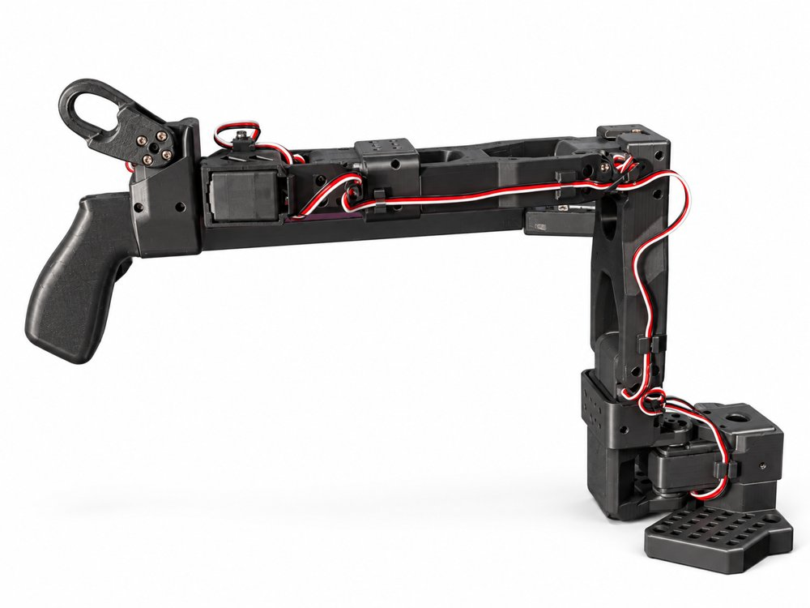
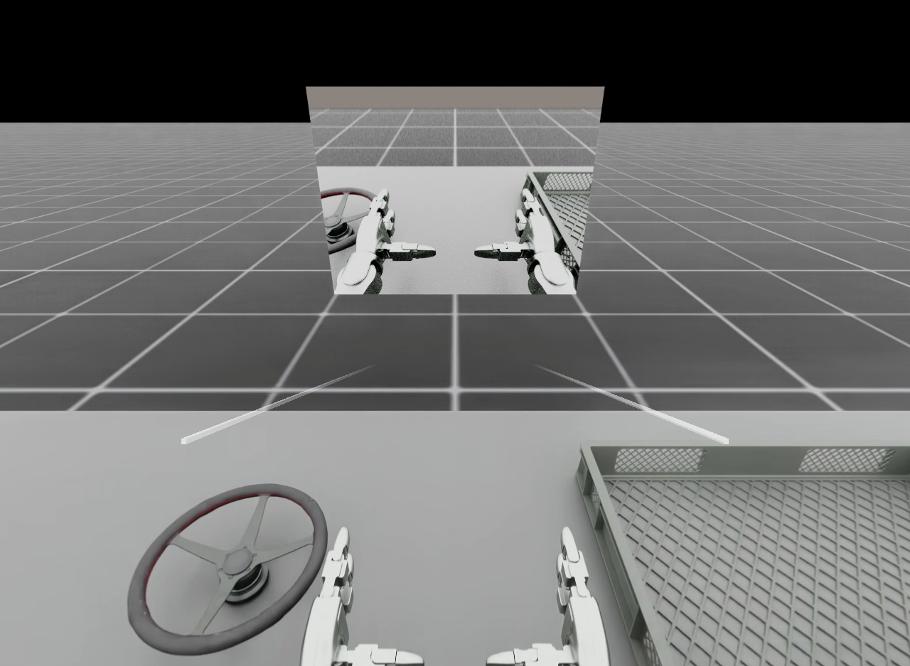
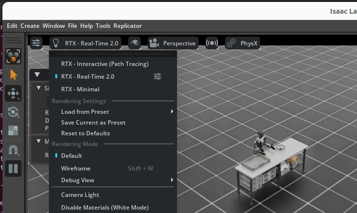
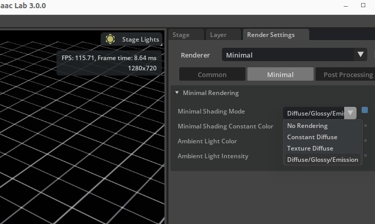
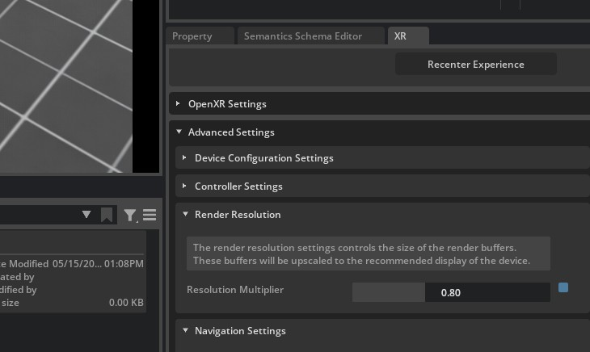

Isaac Capture#
Isaac Capture 是用于高保真第一视角数据和机器人数据采集的统一框架。它提供标准化设备接口及灵活的计算图式重定向流水线，可用于仿真和真实机器人。
备注
名称变更。 Isaac Teleop 已更名为 Isaac Capture 。Isaac Lab 当前固定使用 1.4 版本，该版本的 Python 发行包和导入包仍名为 isaacteleop 。上游在 1.6 中将两者改名为 isaaccapture ，因此本文档中的 isaacteleop 命令和导入名是有意保留的。详见 Isaac Capture 迁移指南 。
Isaac Capture 替代了 Isaac Lab 原有的原生 XR 遥操作组件（ isaaclab.devices.openxr ）。迁移说明见 迁移到 3.0 。
小技巧
想先运行起来？ 请按 配置 Isaac Capture 与 CloudXR 指南完成安装和首次运行，再回到本页了解更深入的内容。
支持的设备#
Isaac Capture 支持多种 XR 头显和跟踪外设。不同设备提供的输入模式不同，决定了可使用的重定向器和控制方案。
设备 |
输入模式 |
客户端 / 连接方式 |
说明 |
|---|---|---|---|
Apple Vision Pro |
手部跟踪（26 个关节）、空间控制器 |
原生 visionOS 应用（ Isaac XR Teleop 示例客户端 ） |
从源代码构建，见 构建并安装客户端应用 。 |
Meta Quest 3 |
运动控制器（扳机、摇杆、握持按钮）、手部跟踪 |
CloudXR.js WebXR 客户端（浏览器） |
CloudXR 客户端 ，见 连接指南 。 |
Pico 4 Ultra |
运动控制器、手部跟踪 |
CloudXR.js WebXR 客户端（浏览器） |
要求 Pico OS 15.4.4U 或更新版本，必须使用 HTTPS 模式。 |
Manus 手套 |
高保真手指跟踪（Manus SDK） |
Isaac Capture 插件（附带） |
从现已弃用的 |
Haptikos 外骨骼 |
外骨骼手部跟踪，搭配控制器手腕位姿 |
Isaac Capture 插件（独立可执行文件） |
需要 Haptikos App、外骨骼，以及带控制器的 OpenXR 头显。见 配合 Quest 使用 Haptikos 外骨骼 。 |
选择控制方案#
输入设备与重定向器的合适组合取决于任务。可先参考下表，再查看后面的详细流水线示例。
任务类型 |
推荐输入 |
重定向器 |
动作维度 |
参考配置 |
|---|---|---|---|---|
操作（如 Franka） |
运动控制器 |
|
8 |
|
双手灵巧操作 + 移动（如 G1 TriHand） |
运动控制器 |
双手 |
32 |
|
固定基座的双手灵巧操作（如 G1） |
运动控制器 |
双手 |
28 |
|
复杂灵巧手（如 GR1T2、G1 Inspire） |
手部跟踪 / Manus 手套 / Haptikos 外骨骼 |
双手 |
36+ |
|
为什么操作任务推荐运动控制器？ 控制器通过握持位姿提供精确的空间控制，并用实体扳机控制夹爪，非常适合抓取放置任务。
为什么复杂灵巧手推荐手部跟踪？ 手部跟踪能采集完整的 26 关节手部位姿，满足高保真灵巧重定向的要求。需要单独控制手指时，这一点尤为关键。
工作原理#
IsaacTeleopDevice 是 Isaac Capture 与 Isaac Lab 的主要集成入口，由三个协作组件组成：
XrAnchorManager ：在仿真中创建并同步 XR 锚点 prim，计算
world_T_anchor变换矩阵，将 XR 跟踪数据映射到仿真坐标系。TeleopSessionLifecycle ：构建重定向流水线，从 Isaac Sim 的 XR 桥接层获取 OpenXR 句柄（独立模式下则通过 CloudXR 运行时自行创建 OpenXR 会话，见 不使用头显运行（独立 I/O） ），创建
TeleopSession，并逐帧推进会话以生成动作张量。CommandHandler ：轻量级 START / STOP / RESET 命令回调注册表。脚本可通过
add_callback()注册回调，但主要控制流程使用poll_control_events()（见 遥操作控制状态（Start / Stop / Reset） ）。
会话生命周期详情
会话采用 延迟创建 ：如果用户尚未在 Isaac Sim 界面中点击“Start XR”，就不会立即创建会话。每次调用 advance() 时都会重试，直到 OpenXR 句柄可用。连接成功后， advance() 返回位于所配置设备上的展平动作张量（ torch.Tensor ）。会话尚未就绪或已销毁时，返回 None 。
在独立模式（ 不使用头显运行（独立 I/O） ）下，创建会话 不需要 等待 Kit XR 句柄，CloudXR 运行时可用时即可启动。
显示 XR 跟踪数据#
Isaac Capture 可在 Isaac Lab 世界坐标系中绘制原始 XR 跟踪位姿。通过可视化可确认跟踪数据是否可用、是否与仿真机器人对齐：
重定向流水线包含
HandsSource时，红色球体显示每只被跟踪手的 26 个关节；RGB 坐标轴显示每个被跟踪控制器的 OpenXR 指向位姿。X、Y、Z 轴分别为红、绿、蓝；控制器的
-Z轴沿其自然指向方向朝前。
启动遥操作会话时启用可视化：
uv run --extra teleop,isaacsim isaaclab teleop run \
--task IsaacContrib-PickPlace-Locomanipulation-G1-Abs \
--visualizer kit \
--xr \
--enable_debug_visualization
./isaaclab.sh -p scripts/environments/teleoperation/teleop_se3_agent.py \
--task IsaacContrib-PickPlace-Locomanipulation-G1-Abs \
--visualizer kit \
--xr \
--enable_debug_visualization
scripts/tools/record_demos.py 和 scripts/environments/teleoperation/teleop_replay_agent.py 也提供 --enable_debug_visualization 标志。此选项在创建 Isaac Capture 设备时应用，设备会话运行期间无法切换。标记仅用于诊断，不会改变重定向流水线生成的动作。
备注
只有启用 Kit 可视化器时才能看到跟踪标记。对应的手或控制器首次提供有效跟踪数据后，才会创建标记。
遥操作控制状态（Start / Stop / Reset）#
Isaac Lab 支持从 XR 头显向仿真发送 start 、 stop 和 reset 远程遥操作控制命令。它们用于开始或结束示范录制、暂停机器人或重置环境，无需接触仿真主机。没有头显时，也可通过 request_start() / request_stop() 及 reset() 在 本地 触发相同命令（见 不使用头显运行（独立 I/O） ）。
它是如何工作的#
默认情况下，每个 IsaacTeleopCfg 都使用约定的 UUID uuid5(NAMESPACE_DNS, "teleop_command") 启用控制消息通道。该通道作为 teleop_control_pipeline 创建于 TeleopCore 的 TeleopSession 内，具体流程如下：
MessageChannelSource使用约定 UUID，打开一个 OpenXR 不透明数据通道（XR_NV_opaque_data_channel）。CloudXR JS 客户端（或其他客户端）通过 UUID 发现通道，并发送 UTF-8 编码的 JSON 命令:
{"type": "teleop_command", "message": {"command": "start teleop"}} {"type": "teleop_command", "message": {"command": "stop teleop"}} {"type": "teleop_command", "message": {"command": "reset teleop"}}
TeleopMessageProcessor解析这些消息，生成布尔脉冲信号（run_toggle、kill、reset）。DefaultTeleopStateManager接收布尔信号，运行其状态机（边沿检测、故障保护），并输出teleop_state（独热编码）及reset_event（布尔脉冲）。TeleopCore 将这些输出解码为
ExecutionEvents，注入每个重定向器的ComputeContext，使有状态的重定向器能够响应状态变化，例如重置时重新初始化跨步状态。
在脚本中轮询控制事件#
使用 poll_control_events() 逐帧读取最新控制状态：
from isaaclab_teleop import poll_control_events
with IsaacTeleopDevice(cfg) as device:
running = False
while sim_app.is_running():
action = device.advance()
ctrl = poll_control_events(device)
if ctrl.is_active is not None:
running = ctrl.is_active # True after "start", False after "stop"
if ctrl.should_reset:
env.reset() # "reset" command received this frame
if action is not None and running:
env.step(action.repeat(num_envs, 1))
else:
env.sim.render()
ControlEvents 有两个字段：
is_active：收到“start”命令后为True，收到“stop”后为False；尚未收到任何命令时为None，此时调用方应保留自己的标志值。should_reset：收到“reset”命令后，仅一帧为True。
关闭控制通道#
如果不需要由头显触发开始、停止及重置（如仅使用键盘的工作流），在配置中设置 control_channel_uuid=None ：
IsaacTeleopCfg(
pipeline_builder=_build_my_pipeline,
control_channel_uuid=None, # no opaque data channel created
)
使用自定义通道 UUID#
要使用其他通道 UUID（如用于独立控制协议），传入任意 16 字节的 bytes 值：
import uuid
MY_UUID = uuid.uuid5(uuid.NAMESPACE_DNS, "my_custom_control").bytes
IsaacTeleopCfg(
pipeline_builder=_build_my_pipeline,
control_channel_uuid=MY_UUID,
)
必须同步更新 CloudXR JS 客户端，使它发送命令时能发现该 UUID。
不使用头显运行（独立 I/O）#
默认情况下，遥操作脚本通过 Isaac Sim 的 Kit XR 桥接层驱动 Isaac Capture，将场景渲染到已连接的 XR 头显。如果只需要将 Isaac Capture 用作 输入/输出传输通道 ，例如主控机械臂传输关节编码器角度，或使用其他非 XR 设备，则可采用 独立 模式，无需 Kit XR 渲染。
teleop_se3_agent.py 和 record_demos.py 通过 --xr 标志选择模式：
传入
--xr：完整 Kit XR 流程，包括头显渲染、锚点及手部/控制器跟踪。不传入
--xr：Isaac Capture 通过 CloudXR 运行时创建并管理自己的 OpenXR 会话（create_isaac_teleop_device(..., use_kit_xr_bridge=False)）；遥操作输入/输出可无界面运行，无需 Kit XR 渲染。
不使用头显启动遥操作#
没有头显时，也没有客户端发送 start 命令，因此脚本在本地驱动状态机：
启动时调用
request_start()，将遥操作状态机切换为 RUNNING（见 遥操作控制状态（Start / Stop / Reset） ），使无界面会话立即开始运行，无需头显界面。存在 Kit 视口窗口时，还会绑定交互控制按键：
按键
操作
B开始或恢复遥操作。
P暂停遥操作（机器人保持当前位置）。
R重置环境。
两种方式使用同一状态机，因此 request_start() / request_stop() 与头显远程命令可以互换使用， poll_control_events() 始终提供权威状态。
备注
没有客户端连接的 CloudXR 运行时不会报告头显，因此独立 OpenXR 会话需要一种在未连接客户端时也会报告系统的设备配置。省略 --xr 时，脚本默认将 --cloudxr_env 设为 CLOUDXR_STANDALONE_ENV ；传入该标志时则默认为 cloudxrjs 。见 CloudXR 环境配置文件 。
示例：SO-101 主控臂关节遥操作#
IsaacContrib-Stack-Cube-SO101-Joint-Teleop-v0 将真实 SO-101 主控臂传输的关节角直接映射到仿真从动臂，无需 XR 头显、逆向运动学或锚点。流水线为 JointStateSource -> JointStateRetargeter (mode="joint") -> TensorReorderer 。
完整流程，包括插件构建、硬件配置、校准、启动及数据集录制，见 Isaac Capture 文档中的 仿真中的数据采集 。以下前提条件是运行本示例的最低要求。
先决条件#
SO-101 硬件 ：通过 USB 连接到工作站的真实 SO-101 主控臂。
从 Isaac Capture 源代码构建的
so101_leader插件 ：主控臂关节状态由独立的 C++ 插件传输，需要与仿真同时运行。重要
so101_leader_plugin不随 Isaac Lab 提供， 不属于isaacteleoppip 包，也不在任何发布压缩包中。只有从源代码构建 Isaac Capture 仓库后才会生成。如果 Isaac Capture 仓库中不存在install/plugins/so101_leader/so101_leader_plugin，说明尚未完成此步骤。先安装构建依赖。Linux 默认强制执行格式检查，因此缺少
clang-format-14是构建失败最常见的原因：sudo apt-get update sudo apt-get install -y build-essential cmake libx11-dev clang-format-14 ccache patchelf
然后克隆仓库，切换到与 Isaac Lab 固定的
isaacteleop版本匹配的发布分支，再配置、构建并安装。根目录pyproject.toml的teleop额外依赖指定isaacteleop~=1.4.145；分支匹配可确保插件的通信格式与 Isaac Lab 安装的isaacteleop包一致。要指定 Python 版本，在配置命令中传入-DISAAC_TELEOP_PYTHON_VERSION=3.12（或3.11、3.13）；同时构建多个版本时，每个版本需要单独的构建目录：git clone https://github.com/NVIDIA/IsaacCapture.git cd IsaacCapture git checkout release/1.4.x cmake -B build # configure (default: Python 3.11) cmake --build build --parallel # build cmake --install build # install into ./install
备注
Isaac Lab 更新遥操作依赖时，应改为检出匹配的
release/<version>.x分支。插件安装到
<IsaacCapture>/install/plugins/so101_leader/so101_leader_plugin。本节后续所有命令都在 Isaac Capture 仓库根目录运行，请将/path/to/IsaacCapture替换为实际路径。先 不传任何参数 运行插件，以验证构建；此时会使用合成后端，无需连接硬件即可启动：cd /path/to/IsaacCapture ./install/plugins/so101_leader/so101_leader_plugin
完整依赖列表及全部构建选项，见 从源代码构建 ；常见失败原因见 仿真中的数据采集 的构建故障排查表，包括 CMake 错误
clang-format not found but ENABLE_CLANG_FORMAT_CHECK is ON。校准 ：SO-101 机械臂使用前必须校准。插件直接与 FEETECH 舵机通信，不依赖
lerobot或 FEETECH SDK，因此应使用它自身的calibrate子命令，无需 OpenXR 运行时。先确定串口。最简单的方法是使用
uvx，它会在临时环境中运行lerobot-find-port，无需安装：uvx --from "lerobot[hardware]" lerobot-find-port
也可以插入 USB 线后立即运行：
sudo dmesg | grep tty | tail -1
tail -1只显示最近一条内核消息，因此输出会明确指出刚连接的设备，例如[12345.6] usb ... ttyACM0。将该路径（/dev/ttyACM0、/dev/ttyACM1等）用于下文命令。cd /path/to/IsaacCapture ./install/plugins/so101_leader/so101_leader_plugin calibrate /dev/ttyACM0 so101_leader.calib
校准包含两个交互步骤：先将机械臂保持在行程中间，再让每个关节走遍完整行程。随后写出校准文件，插件启动时读取它，将原始编码器值映射为关节角。也可传入现有的 LeRobot 校准
.json。未经校准运行会使关节映射错误，从动臂无法跟踪主控臂。
SO-101 主控臂处于第一步校准使用的行程中间姿态。#
小技巧
在行程中间校准这一步，也应如图所示将夹爪置于行程中点。完全打开或闭合可能导致夹爪映射错误。

运行仿真#
SO-101 工作流支持两种观察方式，根据是否有 XR 头显选择：
无头显（仅本地视口）
省略 --xr 。仿真以独立模式运行，启动时自动开启遥操作状态机，无需连接头显（见 不使用头显运行（独立 I/O） ）。传入 --visualizer kit 可在本地 Kit 视口中观察从动臂；默认为无界面模式。
uv run --extra teleop,isaacsim isaaclab teleop run \
--task IsaacContrib-Stack-Cube-SO101-Joint-Teleop-v0 \
--num_envs 1 \
--visualizer kit \
physics=isaacsim_physx
./isaaclab.sh -p scripts/environments/teleoperation/teleop_se3_agent.py \
--task IsaacContrib-Stack-Cube-SO101-Joint-Teleop-v0 \
--num_envs 1 \
--visualizer kit \
physics=isaacsim_physx
有头显（沉浸式 XR 视图）
添加 --xr 可将仿真串流到 Quest、Pico 或 Apple Vision Pro 头显，同时仍由 SO-101 主控臂驱动从动臂关节。重定向流水线不变， --xr 只决定是否将场景渲染到头显。启动后，按 连接 XR 设备 的步骤连接头显。
uv run --extra teleop,isaacsim isaaclab teleop run \
--task IsaacContrib-Stack-Cube-SO101-Joint-Teleop-v0 \
--num_envs 1 \
--visualizer kit --xr \
physics=isaacsim_physx
./isaaclab.sh -p scripts/environments/teleoperation/teleop_se3_agent.py \
--task IsaacContrib-Stack-Cube-SO101-Joint-Teleop-v0 \
--num_envs 1 \
--visualizer kit --xr \
physics=isaacsim_physx
启动插件#
Isaac Lab 不会代您启动插件。请先启动仿真，它会启动插件连接所需的 CloudXR 运行时。然后在 另一个终端 中，加载运行时启动时写出的环境文件（将 OpenXR 加载器指向 CloudXR），再使用主控臂串口启动插件。请将 /dev/ttyACM0 替换为实际设备，串口识别方法见上文校准步骤：
cd /path/to/IsaacCapture
source ~/.cloudxr/run/cloudxr.env
./install/plugins/so101_leader/so101_leader_plugin /dev/ttyACM0 so101_leader so101_leader.calib
参数按位置传入： [device_path] [collection_id] [calibration_file] 。 collection_id 必须保持为 so101_leader ，它是该任务的 JointStateSource 订阅的张量集合。
完全不传参数 运行插件时，会向默认的 so101_leader 集合传输合成轨迹，适合在连接硬件前确认仿真侧连接正确。由于参数是位置参数，无法只跳过设备路径、却仍传入后两个参数：
./install/plugins/so101_leader/so101_leader_plugin # synthetic, no hardware needed
全部配置选项见 SO-101 插件 README 和 仿真中的数据采集 。
启动遥操作#
不使用 --xr ：脚本启动时自动调用 request_start() ，从动臂立即开始跟随主控臂，无需其他输入。
使用 --xr ：可从已连接头显的界面发送 start 命令。Quest / Pico 使用 CloudXR.js 的 Connect 按钮，Apple Vision Pro 使用 Isaac XR Teleop Sample Client 的 Play 按钮。头显发送启动命令后，SO-101 开始驱动从动臂。
无论采用哪种模式，打开 Kit 视口时也可用键盘快捷键控制会话：
按键 |
操作 |
|---|---|
|
开始或恢复遥操作。 |
|
暂停遥操作（从动臂保持当前位置）。 |
|
重置环境。 |
备注
按 R 会重置环境， 同时暂停遥操作 ，不会自动恢复。这是有意设计的：该任务的关节遥操作流水线直接将主控臂原始关节角映射到从动臂，不做重新锚定，也没有离合控制。重置后立即恢复，会让从动臂突然移动到真实主控臂的当前位置，产生幅度较大的关节运动。按 B 恢复前，请先移动真实主控臂，使它与从动臂的重置姿态一致。
移动真实 SO-101 主控臂，仿真从动臂会实时跟随其关节角。要录制该任务的示范，请用相同的 --task 运行 scripts/tools/record_demos.py ，并在另一个终端保持插件运行。完整录制流程及运行时故障排查见 仿真中的数据采集 。
备注
堆好立方体后，请在结束回合前将夹爪 完全打开 。任务的成功判定要求夹爪全开；即使立方体已正确放置，夹爪仅部分打开并停在堆叠上方，也不会被判定为成功。
重定向框架#
Isaac Capture 使用基于计算图的重定向流水线。数据从 源节点 流经 重定向器 ，最终合并为一个动作张量。
源节点#
HandsSource：提供手部跟踪数据，左右手各 26 个关节。ControllersSource：提供运动控制器数据，包括握持位姿、扳机、摇杆等。
可用的重定向器#
重定向器由 Isaac Capture 仓库的 isaacteleop 包提供。以下列出 Isaac Lab 内置环境使用的重定向器。Isaac Capture 可能提供其他未列出的重定向器，完整列表见 Isaac Capture 仓库 。
Se3AbsRetargeter / Se3RelRetargeter
将手部或控制器跟踪数据映射到末端执行器位姿。 Se3AbsRetargeter 输出 7 维绝对位姿（位置 + 四元数）， Se3RelRetargeter 输出 6 维增量。可配置旋转偏移（以度为单位的滚转、俯仰、偏航角）。
GripperRetargeter
输出单个浮点数（-1.0 为闭合，1.0 为打开）。优先使用控制器扳机，也可使用手部跟踪中的拇指与食指捏合距离。
DexHandRetargeter / DexBiManualRetargeter
通过 dex-retargeting 库，将完整的 26 关节手部跟踪数据重定向为特定机器人手的关节角。需要机器人手的 URDF 及 YAML 配置文件。
警告
用于重定向的连杆必须定义在真实指尖处，而非手指中部，以保证优化准确。
TriHandMotionControllerRetargeter
将 VR 控制器按钮（扳机、握持按钮）映射到 G1 TriHand 关节，每只手 7 自由度。映射方式简单：扳机控制食指，握持按钮控制中指，两者同时按下控制拇指。
LocomotionRootCmdRetargeter
将控制器摇杆映射为 4 维移动命令： [vel_x, vel_y, rot_vel_z, hip_height] 。
TensorReorderer
将多个重定向器的输出展平并重新排序，组成单个一维动作张量。 output_order 必须与环境要求的动作空间一致。
Isaac Lab 内置环境按以下方式使用重定向器：
环境 |
使用的重定向器 |
|---|---|
Franka 操作（堆叠、抓取放置） |
|
G1 Inspire 灵巧抓取放置 |
|
GR1-T2 灵巧抓取放置 |
|
G1 上半身（固定基座） |
|
G1 移动操作 |
|
遥操作环境参考#
下表按输入方式列出所有支持遥操作的 Isaac Lab 内置环境。闭环策略评估时，回放脚本会自动应用各环境配置的 play_mode 覆盖设置；传入 --train_env_cfg 可直接使用原始训练配置回放。
Isaac Capture（XR 头显）环境#
这些环境使用 Isaac Capture XR 流水线，支持运动控制器或手部跟踪。
任务 ID |
输入模式 |
使用的手 |
操作者交互方式 |
|---|---|---|---|
|
控制器 |
右手 |
机械臂： 右控制器握持位姿驱动末端执行器。 夹爪： 右扳机。 |
|
控制器 |
右手 |
机械臂： 右控制器握持位姿通过绝对 IK 驱动末端执行器，离合操作会重设参考基准；IK 跟踪位置，朝向作为加权软目标。 夹爪： 右扳机（模拟量）。 |
|
手部跟踪 |
双手 |
机械臂： 左右手手腕位姿分别驱动对应末端执行器。 手： 完整的 26 关节手部跟踪数据通过 |
|
手部跟踪 |
双手 |
与 |
|
手部跟踪 |
双手 |
重定向流水线与 |
|
手部跟踪 |
双手 |
重定向流水线与 |
|
手部跟踪 |
双手 |
机械臂： 左右手手腕位姿分别驱动对应末端执行器。 手： 完整的 26 关节手部跟踪数据通过 |
|
控制器 |
双手 |
机械臂： 左右控制器握持位姿分别驱动对应末端执行器。 手： 扳机闭合食指，握持按钮闭合中指，两者同时按下闭合拇指；每只 TriHand 有 7 个自由度。 |
|
控制器 |
双手 |
机械臂： 与上述固定基座 G1 相同。 手： 使用相同 TriHand 映射。 移动： 左摇杆控制线速度（x/y），右摇杆 X 控制转动速度，右摇杆 Y 控制髋部高度。 |
小技巧
控制器 提供握持位姿及实体按钮（扳机、握持按钮、摇杆），适合需要夹爪或简单手部映射的任务。 手部跟踪 采集每只手的 26 个手腕和手指关节，是复杂机器人手灵巧重定向所必需的数据。
键盘与 SpaceMouse 环境#
备注
键盘和 SpaceMouse 遥操作使用原有的 Isaac Lab 原生遥操作组件（ isaaclab.devices ），不使用 Isaac Capture。这些环境无需 XR 头显。
以下设备按键布局适用于本节所有环境。各环境的差异，如夹爪是否启用、灵敏度设置，见后面的环境表。
键盘
功能 |
按键 |
描述 |
|---|---|---|
X 方向位置 |
|
末端执行器向前 / 向后移动。 |
Y 方向位置 |
|
末端执行器向左 / 向右移动。 |
Z 方向位置 |
|
末端执行器向上 / 向下移动。 |
滚转 |
|
绕 X 轴旋转。 |
俯仰 |
|
绕 Y 轴旋转。 |
偏航 |
|
绕 Z 轴旋转。 |
切换夹爪状态 |
|
打开 / 关闭夹爪或吸附装置（Reach 环境中禁用）。 |
重置 |
|
清除累计位姿增量和夹爪状态。 |
SpaceMouse
功能 |
控制方式 |
描述 |
|---|---|---|
平移 |
6 自由度控制帽 |
推、拉或平移控制帽，使末端执行器沿 X/Y/Z 方向移动。 |
旋转 |
6 自由度控制帽 |
倾斜或扭转控制帽，控制末端执行器的滚转、俯仰和偏航。 |
切换夹爪状态 |
左侧按钮 |
打开 / 关闭夹爪或吸附装置（Reach 环境中禁用）。 |
重置 |
右侧按钮 |
清除累计位姿增量和夹爪状态。 |
游戏手柄 （仅 Reach 环境）
功能 |
控制方式 |
描述 |
|---|---|---|
X / Y 方向位置 |
左摇杆 |
末端执行器前后、左右移动。 |
Z 方向位置 |
右摇杆（上下） |
末端执行器向上 / 向下移动。 |
滚转 / 俯仰 |
方向键 |
左右控制滚转，上下控制俯仰。 |
偏航 |
右摇杆（左右） |
绕 Z 轴旋转。 |
切换夹爪状态 |
X 按钮 |
打开 / 关闭夹爪（Reach 环境中禁用）。 |
任务 ID |
设备 |
操作者交互方式 |
|---|---|---|
|
键盘、SpaceMouse |
机械臂： 通过 RMPFlow 控制末端位姿。 夹爪： 键盘 |
注意： 使用 RMPFlow 控制器遥操作时，应避免碰撞立方体；接触力会导致控制器过度调整，机械臂发生漂移。请将末端移到立方体正上方附近，停住，再闭合吸盘。 仅支持 CPU 仿真： 遥操作时传入 |
键盘、SpaceMouse |
机械臂： 通过 RMPFlow 控制末端位姿。 吸附： 键盘 |
|
键盘、SpaceMouse |
与上述左臂夹爪任务相同，但增加相机观测。 |
|
键盘、SpaceMouse |
机械臂： 通过 RMPFlow 控制左臂末端位姿。 夹爪： 键盘 |
|
键盘、SpaceMouse |
机械臂： 通过 RMPFlow 控制右臂末端位姿。 夹爪： 键盘 |
仅支持 CPU 仿真： 遥操作时传入 |
键盘、SpaceMouse |
机械臂： 相对 IK 末端控制。 吸附： 键盘 |
仅支持 CPU 仿真： 遥操作时传入 |
键盘、SpaceMouse |
与上述长吸盘 UR10 任务相同，但使用较短吸盘。 |
|
键盘、游戏手柄、SpaceMouse |
机械臂： 相对 IK 末端控制。夹爪禁用。 |
|
键盘、游戏手柄、SpaceMouse |
机械臂： 相对 Newton IK 末端控制。夹爪禁用。 |
备注
人形机器人机械臂（如 Galbot、Agibot）存在逆向运动学必须遵守的关节限位。微分 IK 控制器忽略这些限位，因此遥操作时更推荐 RMPFlow，它在求解 IK 时会约束关节范围。由此，目标位姿在限位内不可达时，机械臂偶尔会停止响应；这是预期行为，并非错误。
主控臂环境#
这些环境由真实的 主控臂 驱动，通过 Isaac Capture 张量传输通道发送关节角，直接映射到仿真从动臂，无需 XR 头显或逆向运动学。运行命令及流水线见上文 示例：SO-101 主控臂关节遥操作 。
任务 ID |
设备 |
操作者交互方式 |
|---|---|---|
|
SO-101 主控臂 |
机械臂 + 夹爪： 主控臂的六个关节角（5 个机械臂自由度 + 夹爪）通过 |
在控制器与手部跟踪之间切换#
重定向流水线决定环境采用运动控制器还是手部跟踪。切换输入模式需要修改环境配置的 pipeline_builder 函数。只要动作空间（ TensorReorderer 输出顺序）不变，就不需要其他环境级修改。
从控制器切换到手部跟踪
主要修改如下：
创建
HandsSource并对其应用世界坐标系与锚点之间的变换，替代ControllersSource。将
Se3RetargeterConfig.input_device指向对应的HandsSource键。设置
use_wrist_rotation=True和use_wrist_position=True，使 SE3 重定向器读取手腕关节，而非控制器握持位姿。GripperRetargeter已支持两种输入：连接ControllersSource时使用控制器扳机，连接HandsSource时使用拇指与食指捏合。
以下并列展示 Franka 堆叠环境基于控制器的流水线及其手部跟踪变体，便于比较。
原始版本（基于控制器）：
# SE3: tracks right controller grip pose
se3_cfg = Se3RetargeterConfig(
input_device=ControllersSource.RIGHT,
use_wrist_rotation=False,
use_wrist_position=False,
target_offset_roll=90.0,
)
se3 = Se3AbsRetargeter(se3_cfg, name="ee_pose")
connected_se3 = se3.connect({
ControllersSource.RIGHT: transformed_controllers.output(
ControllersSource.RIGHT
),
})
修改后（基于手部跟踪）：
se3_cfg = Se3RetargeterConfig(
input_device=HandsSource.RIGHT,
use_wrist_rotation=True,
use_wrist_position=True,
target_offset_roll=0.0,
)
se3 = Se3AbsRetargeter(se3_cfg, name="ee_pose")
transformed_hands = hands.transformed(transform_input.output(ValueInput.VALUE))
connected_se3 = se3.connect({
HandsSource.RIGHT: transformed_hands.output(HandsSource.RIGHT),
})
GripperRetargeter 无需修改，它接受控制器和手部输入，并使用已连接的数据源。
从手部跟踪切换到控制器
反向执行上述步骤：将 input_device 设为 ControllersSource 的键，对控制器而非手部应用变换，设置 use_wrist_rotation=False 和 use_wrist_position=False 。调整 target_offset_roll/pitch/yaw ，补偿控制器握持坐标系的朝向；Franka 类夹爪通常需要 90 度滚转偏移。
备注
切换输入模式时，可能需要调整 target_offset_roll 、 target_offset_pitch 和 target_offset_yaw 。相对于机器人末端执行器，控制器握持坐标系与手腕坐标系的默认朝向不同。
构建重定向流水线#
流水线构建器是一个可调用对象，负责构建重定向计算图，并返回仅包含 "action" 键的 OutputCombiner 。以下是 Franka 机械臂的完整示例，来自 stack_ik_abs_env_cfg.py ：
def _build_franka_stack_pipeline():
from isaacteleop.retargeting_engine.deviceio_source_nodes import ControllersSource, HandsSource
from isaacteleop.retargeting_engine.interface import OutputCombiner, ValueInput
from isaacteleop.retargeters import (
GripperRetargeter, GripperRetargeterConfig,
Se3AbsRetargeter, Se3RetargeterConfig,
TensorReorderer,
)
from isaacteleop.retargeting_engine.tensor_types import TransformMatrix
# 1. Create input sources
controllers = ControllersSource(name="controllers")
hands = HandsSource(name="hands")
# 2. Apply coordinate-frame transform (world_T_anchor provided by IsaacTeleopDevice)
transform_input = ValueInput("world_T_anchor", TransformMatrix())
transformed_controllers = controllers.transformed(
transform_input.output(ValueInput.VALUE)
)
# 3. Create and connect retargeters
se3_cfg = Se3RetargeterConfig(
input_device=ControllersSource.RIGHT,
target_offset_roll=90.0,
)
se3 = Se3AbsRetargeter(se3_cfg, name="ee_pose")
connected_se3 = se3.connect({
ControllersSource.RIGHT: transformed_controllers.output(ControllersSource.RIGHT),
})
gripper_cfg = GripperRetargeterConfig(hand_side="right")
gripper = GripperRetargeter(gripper_cfg, name="gripper")
connected_gripper = gripper.connect({
ControllersSource.RIGHT: transformed_controllers.output(ControllersSource.RIGHT),
HandsSource.RIGHT: hands.output(HandsSource.RIGHT),
})
# 4. Flatten into a single action tensor with TensorReorderer
ee_elements = ["pos_x", "pos_y", "pos_z", "quat_x", "quat_y", "quat_z", "quat_w"]
reorderer = TensorReorderer(
input_config={
"ee_pose": ee_elements,
"gripper_command": ["gripper_value"],
},
output_order=ee_elements + ["gripper_value"],
name="action_reorderer",
input_types={"ee_pose": "array", "gripper_command": "scalar"},
)
connected_reorderer = reorderer.connect({
"ee_pose": connected_se3.output("ee_pose"),
"gripper_command": connected_gripper.output("gripper_command"),
})
# 5. Return OutputCombiner with "action" key
return OutputCombiner({"action": connected_reorderer.output("output")})
小技巧
TensorReorderer 的 output_order 必须与环境动作空间一致。不一致会导致控制错误，却不会报错。
配置环境#
通过 IsaacTeleopCfg 在环境配置中注册流水线：
from isaaclab_teleop import IsaacTeleopCfg, XrCfg
@configclass
class MyTeleopEnvCfg(ManagerBasedRLEnvCfg):
xr: XrCfg = XrCfg(anchor_pos=(0.5, 0.0, 0.5))
def __post_init__(self):
super().__post_init__()
self.isaac_teleop = IsaacTeleopCfg(
pipeline_builder=_build_my_pipeline,
sim_device=self.sim.device,
xr_cfg=self.xr,
)
IsaacTeleopCfg 的主要字段：
pipeline_builder：返回OutputCombiner的可调用对象，该对象包含"action"输出。retargeters_to_tune：可选的可调用对象，返回要在实时调参界面中显示的重定向器。xr_cfg：用于锚点配置的XrCfg，见下文。xr_camera_feeds：按顺序选择现有任务相机，并设置各路画面的面板。列表默认为空，任务需显式启用画中画（PiP）。xr_camera_feed_layout：查看者参考位姿、固定世界位姿，以及手动、水平、垂直或网格面板布局。plugins：Isaac Capture 插件配置列表，如 Manus。sim_device：torch 设备字符串，默认为"cuda:0"。retargeting_execution：Isaac Capture 重定向执行设置。默认使用RetargetingExecutionConfig(mode="pipelined")，搭配DeadlinePacingConfig(safety_margin_s=0.025)，让重定向在 Isaac Capture 工作线程上运行，避免阻塞仿真循环。25 ms 安全余量使 Isaac Capture 的 Python 执行稍晚于 Isaac Lab 仿真步的 Python 执行，让渲染等原生操作有机会并行，而非两套 Python 组件在仿真步开始时争用 GIL。
警告
pipeline_builder 和 retargeters_to_tune 必须是 可调用对象 （函数或 lambda），不能是预先构建的对象。 @configclass 装饰器会深拷贝可变属性，破坏预先构建的流水线计算图。
CloudXR 环境配置文件#
Isaac Lab 附带三份配置 CloudXR 运行时的 .env 文件，两份用于 XR 设备，一份用于无界面的独立模式。它们包含在 isaaclab_teleop 包中，可通过常量引用：
常量 |
文件 |
|
|
|
|---|---|---|---|---|
|
|
|
|
|
|
|
|
|
|
|
|
|
|
|
三份配置均设置 NV_CXR_ENABLE_PUSH_DEVICES=0 ，适用于头显光学手部跟踪这一最常见配置。对于 Manus 手套等主动推送数据的外部设备，请在自定义配置中改为 1 ，见下文。它们也设置 NV_ENABLE_POSE_WAIT=0 ，防止帧耗时突增时 CloudXR 限制应用速度。这优先保证低延迟，而非采用 CloudXR 的位姿等待平滑机制。
不使用 --xr 时，默认采用 CLOUDXR_STANDALONE_ENV （见 不使用头显运行（独立 I/O） ）。它固定使用模拟的 quest3 设备配置，使没有客户端连接的 CloudXR 运行时仍能报告 OpenXR 系统，避开 XR_ERROR_FORM_FACTOR_UNAVAILABLE 。
启动时覆盖配置#
teleop_se3_agent.py 和 record_demos.py 的 --cloudxr_env 标志选择 .env 配置文件。未设置时，使用 --xr 默认采用 cloudxrjs （Quest/Pico），不使用则采用 standalone 。Apple Vision Pro 可使用 avp 简写，无界面配置可使用 standalone ，自定义配置可传入完整文件路径：
# Use the AVP profile
uv run --extra teleop,isaacsim isaaclab teleop run \
--task IsaacContrib-PickPlace-GR1T2-WaistEnabled-Abs \
--visualizer kit --xr \
--cloudxr_env avp
# Use the AVP profile
./isaaclab.sh -p scripts/environments/teleoperation/teleop_se3_agent.py \
--task IsaacContrib-PickPlace-GR1T2-WaistEnabled-Abs \
--visualizer kit --xr \
--cloudxr_env avp
创建自定义配置#
复制附带的配置文件并编辑：
# Start from the Quest/Pico profile
cp $(uv run --extra teleop,isaacsim python -c \
"from isaaclab_teleop import CLOUDXR_JS_ENV; print(CLOUDXR_JS_ENV)") ~/my-cloudxr.env
编辑 ~/my-cloudxr.env ，修改所需值，如为 Manus 手套设置 NV_CXR_ENABLE_PUSH_DEVICES=1 ，然后通过 --cloudxr_env ~/my-cloudxr.env 传入。
关闭自动启动#
如果希望在另一终端手动运行 CloudXR 运行时（ python -m isaacteleop.cloudxr ），可通过以下方式关闭自动启动：
命令行标志 ：遥操作脚本的
--no-auto_launch_cloudxr。完全禁用 CloudXR ：
--cloudxr_env none。环境变量 ：
ISAACLAB_CXR_SKIP_AUTOLAUNCH=1在运行时覆盖命令行标志。
# Disable via CLI flag
uv run --extra teleop,isaacsim isaaclab teleop run \
--task IsaacContrib-PickPlace-Locomanipulation-G1-Abs \
--visualizer kit --xr \
--no-auto_launch_cloudxr
# Or disable via environment variable
ISAACLAB_CXR_SKIP_AUTOLAUNCH=1 uv run --extra teleop,isaacsim isaaclab teleop run \
--task IsaacContrib-PickPlace-Locomanipulation-G1-Abs \
--visualizer kit --xr
# Disable via CLI flag
./isaaclab.sh -p scripts/environments/teleoperation/teleop_se3_agent.py \
--task IsaacContrib-PickPlace-Locomanipulation-G1-Abs \
--visualizer kit --xr \
--no-auto_launch_cloudxr
# Or disable via environment variable
ISAACLAB_CXR_SKIP_AUTOLAUNCH=1 ./isaaclab.sh -p scripts/environments/teleoperation/teleop_se3_agent.py \
--task IsaacContrib-PickPlace-Locomanipulation-G1-Abs \
--visualizer kit --xr
非交互式接受 CloudXR 许可证#
NVIDIA CloudXR 许可证与 Omniverse 许可证相互独立。运行时首次启动会从标准输入请求接受许可证：
NVIDIA CloudXR EULA must be accepted to run. View: <license URL>
Accept NVIDIA CloudXR EULA? [y/N]:
无界面、容器或 CI 运行中没有终端可响应，启动会失败并报 RuntimeError: CloudXR EULA was not accepted; cannot start the runtime 。设置 ISAACLAB_CXR_ACCEPT_EULA=1 可预先接受许可证，方式与 Omniverse 许可证的 OMNI_KIT_ACCEPT_EULA 相同：
ISAACLAB_CXR_ACCEPT_EULA=1 ./isaaclab.sh -p scripts/environments/teleoperation/teleop_se3_agent.py \
--task IsaacContrib-PickPlace-Locomanipulation-G1-Abs \
--xr
y 、 yes 和 1 表示接受，不区分大小写，忽略首尾空白，与 OMNI_KIT_ACCEPT_EULA 的取值相同。未设置变量或设为其他值时，仍保留交互提示。接受记录存储在 ~/.cloudxr/run/eula_accepted ；一旦通过交互或此变量接受许可证，后续运行就不再询问。该变量适用于所有启动运行时的脚本，包括 teleop_replay_agent.py 中进程级的启动器。
配置 XR 锚点#
XrCfg 控制仿真在 XR 设备视野中的位置和朝向。
anchor_pos/anchor_rot静态锚点位置。仿真中位于这些坐标的点，会出现在 XR 设备的局部原点（地面高度）。将其设为机器人下方的地面点，可把机器人放到用户面前。
anchor_prim_path将锚点附着到 USD prim，实现动态定位。适用于机器人移动、XR 相机需要跟随的运动任务。
anchor_rotation_mode控制锚点旋转行为：
模式
描述
FIXED根据
anchor_rot设置一次旋转，适合静态操作场景。FOLLOW_PRIM旋转持续跟随所附着的 prim，适合用户应面向机器人前进方向的运动任务。
FOLLOW_PRIM_SMOOTHED与
FOLLOW_PRIM相同，但使用球面线性插值（slerp）。由anchor_rotation_smoothing_time控制，单位为秒，默认为 1.0。可减轻旋转突变引起的晕动不适，典型范围为 0.3–1.5 秒。CUSTOM用户提供的可调用对象
anchor_rotation_custom_func(headpose, primpose) -> quaternion，用于完全自定义逻辑。fixed_anchor_height为
True（默认）时，锚点高度保持初始值，避免运动过程中上下起伏。near_planeXR 设备的最近渲染距离，默认为 0.15 m。
备注
在 Apple Vision Pro 上，本地坐标系可以通过按住数字表冠重置到用户下方的地板上的位置。
小技巧
相机传感器会增加 GPU 开销。工作流既不需要图像观测，也不需要 XR 相机反馈时，可用 --disable_external_cameras 移除它们；该标志也会跳过已配置的画中画画面。
XR 相机反馈#
有序的 XrCameraFeedCfg 对象列表用于选择任务场景中现有的相机。管理器在渲染后发布每个新 RGBA 帧， XrCameraFeedLayoutCfg 则按手动、水平、垂直或网格布局放置面板。以下已注册任务默认启用画中画：
IsaacContrib-PickPlace-GR1T2-AbsIsaacContrib-NutPour-GR1T2-Pink-IK-AbsIsaacContrib-ExhaustPipe-GR1T2-Pink-IK-AbsIsaacContrib-PickPlace-Locomanipulation-G1-AbsIsaacContrib-PickPlace-FixedBaseUpperBodyIK-G1-Abs
两个 G1 任务都在 head_locked 面板中显示已校准的头部相机画面，面板随头显位置和朝向移动。移动操作任务保留相机作为录制的策略观测；固定基座 G1 仅将其用于画中画，策略观测结构不变。
使用默认的头部锁定画中画运行固定基座 G1 上半身遥操作：
uv run --extra teleop,isaacsim isaaclab teleop run \
--task IsaacContrib-PickPlace-FixedBaseUpperBodyIK-G1-Abs \
--num_envs 1 --xr --device cpu
此任务使用运动控制器操纵机械臂及 TriHand 手指，机器人根部保持固定。面板跟随头显，但画面来自机器人头部相机，而非头显视图。 --device cpu 选择 CPU 仿真，相机渲染和 CloudXR 编码仍使用 GPU。
启用 Isaac Capture 的环境使用 --xr 运行时， teleop_se3_agent.py 和 record_demos.py 会显示所有已启用的画面。只有任务通过 xr_camera_feeds 显式选择现有的 CameraCfg 时，才会显示画中画。除固定基座 G1 外，被选中的 robot_pov_cam 也作为策略图像观测，因此常规示范录制器会保存与操作者看到的相同画面。每个相机都以机器人的实体连杆为父对象，因此视图随机器人运动：


XR 遥操作期间，以画中画面板显示机器人视角相机反馈。#
警告
没有场景分区隔离时，画中画面板进入其源相机视野，会产生递归的镜中镜效果。请移动面板或调整相机朝向，让面板保持在相机视野之外。
两个 G1 任务都启用 use_scene_partition ，避免递归。环境构造前的准备阶段，会暂时禁用所选 Isaac RTX 相机渲染器的逐环境分区。绑定阶段在渲染器初始化后、创建面板前，将 /rtx/scenePartitioning/showAllPartitionsByDefault=False 。几何体一开始必须是共享且未分区的背景；相机初始化后才清除其分区，可能导致它在 XR 中不可见。其他场景相机也必须设置 enable_scene_partitioning=False 。
SceneUI 适配器将 XR 相机和 /ui 分配到 isaaclab_teleop_xr_camera_pip ，在 SceneUI 子对象出现时刷新继承。机器人相机看到不含 UI 的共享背景，XR 则同时看到两者。XR/UI 覆盖写入会话层。最后一个使用者关闭后，原先的相机、渲染器和分区设置会恢复，除非期间被外部修改。最后一个完成准备的会话关闭后恢复相机配置；最后一个已绑定会话关闭后，将全局设置恢复为绑定时的值。即使环境构造失败，已准备的会话也必须关闭；遥操作与录制脚本会处理这项清理。跟踪或隔离不可用时，面板保持隐藏，恢复后重新显示。其他任务保留原有行为，因为 use_scene_partition 默认为 False 。
uv run --extra teleop,isaacsim isaaclab teleop run \
--task IsaacContrib-PickPlace-GR1T2-Abs \
--xr --device cpu
XR 相机画中画目前仅支持一个环境。任务启用画中画时，启动阶段会拒绝任何不为 1 的 --num_envs 值；不使用画中画时，Isaac Capture XR 的行为不变。对于两个 G1 任务，都可设置 env.isaac_teleop.xr_camera_feeds=[] 来关闭画中画，同时保留相机传感器及已配置的相机观测。
参考画面配置通过 XrCameraFeedCfg 请求渲染产物局部的 DLSS 光线重建，以及 quality 执行模式。内部画中画适配器只在所选相机的渲染产物上写入这两个属性。光线重建还需要进程全局的响应式降噪设置；所选画面请求光线重建时，遥操作和录制脚本会在构造环境前启用它。
相机选择#
任务通过 IsaacTeleopCfg.xr_camera_feeds 声明默认选择：
from isaaclab_teleop import IsaacTeleopCfg, XrCameraFeedCfg
self.isaac_teleop = IsaacTeleopCfg(
pipeline_builder=_build_my_pipeline,
xr_camera_feeds=[
XrCameraFeedCfg(
camera_name="left_wrist_camera",
enable_dlss_ray_reconstruction=True,
dlss_exec_mode="quality",
),
XrCameraFeedCfg(camera_name="overview_camera", enabled=False),
],
)
要录制训练视图，请在任务场景中定义命名的 CameraCfg ，并在 observations.policy 中定义匹配的 mdp.image_rgb 项。常规录制器随后会存储该观测，上面的画中画声明只负责选择显示内容。任务声明中已启用的条目控制相机选择、面板数量、显示顺序和自动布局顺序，不修改可复用的任务配置。
放置方式#
默认 placement 为 "viewer_start" 。显示组件等待首个有效头显位姿，记录眼部位置和水平偏航角，再将布局放到眼睛高度、前方 0.8 m 处。用户移动时，该位姿仍固定在世界坐标系中。XR 显示断开时面板隐藏，重新连接后采集新的起始位姿；重置环境不会重新居中。
支持三种放置参考：
放置方式 |
行为 |
|---|---|
|
记录首个有效眼部位置及水平偏航角，然后将布局固定在世界坐标系中。这是默认方式。 |
|
按所配置的偏移和距离，跟随当前头显位置及朝向。 |
|
以 |
from isaaclab_teleop import XrCameraFeedLayoutCfg
# Default: fixed in the world at the user's starting eye pose.
self.isaac_teleop.xr_camera_feed_layout = XrCameraFeedLayoutCfg()
# Follow the headset and pack feeds left to right.
self.isaac_teleop.xr_camera_feed_layout = XrCameraFeedLayoutCfg(
placement="head_locked",
mode="horizontal",
distance_m=0.8,
)
# Place a grid in an Isaac Lab Z-up world. This example assumes an eye at
# (0, 0, 1.6) looking along world +Y.
self.isaac_teleop.xr_camera_feed_layout = XrCameraFeedLayoutCfg(
placement="world",
mode="grid",
world_position_m=(0.0, 0.8, 1.6),
world_orientation_xyzw=(0.7071067812, 0.0, 0.0, 0.7071067812),
max_columns=2,
)
manual 模式保留各路画面的 offset_m 和 distance_m 。 horizontal 、 vertical 和 grid 模式根据 panel_gap_m ，围绕 center_offset_m 排列已启用的画面；网格模式还遵循 max_columns 。偏移在所选布局平面内测量。采用 viewer_start 和 head_locked 时， distance_m 将该平面放在查看者参考位置前方。手动模式下，相同偏移的画面会重叠；显示多个面板时，请选自动模式或分别设置不同偏移。
采用 world 时，显式位姿以米为单位，定义在 Isaac Lab USD 舞台世界坐标系中，而非 OpenXR 物理空间。Isaac Lab 舞台以 Z 轴朝上。 world_orientation_xyzw 将面板局部坐标映射到世界坐标系：局部 +X 指向图像右方，+Y 指向上方，+Z 从可读面朝向查看者。各路画面及自动布局的偏移都应用在面板局部 XY 平面内。
关闭相机与画中画#
将 enabled 设为 False 可隐藏一路画面，设置 xr_camera_feeds=[] 可隐藏全部画中画。列表默认为空。这些设置不会移除任务独立持有的相机传感器。
--disable_external_cameras 是 teleop_se3_agent.py 和 record_demos.py 的相机渲染总开关，会移除相机传感器，并禁用所有已配置的画中画。
Kit Scene UI 显示方式#
画中画通过 Kit Scene UI 显示，并使用 SpatialSource 定位。只有请求已启用的画面时，才会导入 Kit 模块。如果 Scene UI 模块无法导入，脚本会记录警告，继续运行但不显示画中画；任务自身的相机及录制观测不变。因此，未来不再提供 Scene UI 的无 Kit 入口仍可使用相机选择配置。渲染产物调优也会尽可能应用：没有兼容渲染产物的后端保留 Camera 缓冲区方式，模式属性写入失败时发出警告，但画中画继续运行。其他配置、相机缓冲区及面板初始化错误仍会导致启动失败。
触觉反馈#
Isaac Capture 可将仿真侧信号转换为操作者设备上的 触觉反馈 ，在遥操作和示范录制时提供抓取感觉的闭环反馈。目前附带两种后端：
控制器振动 ：运动控制器按对应机器人手的总接触力大小振动。
触觉手套 ：每根手指按该手指抓紧被操作物体的程度振动。
反馈是一条 输出 通路，可看作输入重定向流水线的反向映射。每步， HapticFeedbackDriver 从场景读取各只手的信号向量，并推送给 IsaacTeleopDevice ，后者通过 Isaac Capture 的 HapticSink 输出触觉反馈。信号到设备的映射在重定向计算图内运行，环境中无需包含设备专用代码。
设计将三部分做成可替换组件，让同一接口适用于两种设备：
信号源 ：如何从环境读取各只手的向量。
输出端口 ：
HapticFeedbackReceiver协议，传输的是 向量，振动电机为一个标量，手套则每根手指一个值。设备后端 ：由具体的
HapticFeedbackCfg子类选择，在HapticSink后连接重定向器和设备。
启用反馈时，为每只手在场景中添加 ContactSensor ，并将 HapticFeedbackCfg 子类配置放在与 isaac_teleop 同级的位置。遥操作脚本（ teleop_se3_agent.py 和 record_demos.py ）会自动检测 haptic_feedback 属性，无需额外标志。如果当前设备无法输出触觉反馈（如键盘），或环境没有 haptic_feedback ，则直接跳过该功能。
控制器振动#
使用 ControllerHapticFeedbackCfg 。它将每只手的接触力汇总为一个振幅，通过 amplitude = clamp(gain * (force - deadband), 0, saturation) 映射。字段包括 gain [1/N]、 deadband [N]、 saturation ，以及脉冲的 frequency_hz / duration_s 。
from isaaclab.sensors import ContactSensorCfg
from isaaclab_teleop import ControllerHapticFeedbackCfg
@configclass
class MySceneCfg(InteractiveSceneCfg):
left_hand_contact = ContactSensorCfg(
prim_path="{ENV_REGEX_NS}/Robot/left_hand_.*_link", update_period=0.0, history_length=3
)
right_hand_contact = ContactSensorCfg(
prim_path="{ENV_REGEX_NS}/Robot/right_hand_.*_link", update_period=0.0, history_length=3
)
# in the env cfg __post_init__:
self.scene.robot.spawn.activate_contact_sensors = True
self.haptic_feedback = ControllerHapticFeedbackCfg(
left_sensor_name="left_hand_contact",
right_sensor_name="right_hand_contact",
)
两个 G1 遥操作环境（ IsaacContrib-PickPlace-Locomanipulation-G1-Abs 、 IsaacContrib-PickPlace-FixedBaseUpperBodyIK-G1-Abs ）已启用该功能。控制器振动通过 OpenXR（ xrApplyHapticFeedback ）传输，无需修改 CloudXR .env 配置。
触觉手套（逐指抓握反馈）#
使用 GloveHapticFeedbackCfg 。每只手的接触传感器 只筛选与被抓取物体的接触 （ filter_prim_paths_expr ），因此 normal_force_matrix_w 仅报告各手指对该物体的力。驱动器按拇指到小指排序各指的力大小，通过 finger_order 匹配传感器刚体名称，组成 FingerPowerVector ，由 collection_id 上跨进程的手套设备输出。
from isaaclab.sensors import ContactSensorCfg
from isaaclab_teleop import GloveHapticFeedbackCfg
@configclass
class MySceneCfg(InteractiveSceneCfg):
object = RigidObjectCfg(prim_path="{ENV_REGEX_NS}/Object", ...)
left_hand_contact = ContactSensorCfg(
prim_path="{ENV_REGEX_NS}/Robot/.*L_(thumb_distal|index_intermediate|"
"middle_intermediate|ring_intermediate|pinky_intermediate)_link",
filter_prim_paths_expr=["{ENV_REGEX_NS}/Object"],
update_period=0.0, history_length=3,
)
right_hand_contact = ContactSensorCfg(
prim_path="{ENV_REGEX_NS}/Robot/.*R_(...)_link",
filter_prim_paths_expr=["{ENV_REGEX_NS}/Object"],
update_period=0.0, history_length=3,
)
# in the env cfg __post_init__:
self.haptic_feedback = GloveHapticFeedbackCfg(
left_sensor_name="left_hand_contact",
right_sensor_name="right_hand_contact",
)
两个 GR1T2 抓取放置遥操作环境（ IsaacContrib-PickPlace-GR1T2-Abs 、 IsaacContrib-PickPlace-GR1T2-WaistEnabled-Abs ）已启用该功能。
备注
手套是 跨进程 设备： GloveHapticFeedbackCfg 将逐指功率值通过 collection_id （默认 "manus_glove_haptic" ）推送给厂商插件。请运行该插件，并在自定义 CloudXR 配置中设置 NV_CXR_ENABLE_PUSH_DEVICES=1 （见 CloudXR 环境配置文件 ）。接触传感器的 prim_path 正则表达式必须匹配机器人的手指刚体名称；不确定时，可通过 print(robot.data.body_names) 核对。
录制用于模仿学习的示范#
Isaac Capture 与 Isaac Lab 的 record_demos.py 集成，用于录制遥操作示范，并提供 isaaclab teleop record 命令。
环境配置有 isaac_teleop 属性时，脚本会自动使用 create_isaac_teleop_device() ，无需 --teleop_device 标志：
uv run --extra teleop,isaacsim isaaclab teleop record \
--task IsaacContrib-PickPlace-Locomanipulation-G1-Abs \
--visualizer kit \
--xr
./isaaclab.sh -p scripts/tools/record_demos.py \
--task IsaacContrib-PickPlace-Locomanipulation-G1-Abs \
--visualizer kit \
--xr
run 、 record 和 replay 工作流接受 Hydra 风格的 key=value 任务配置选择项，前面不加 -- 。例如，使用 PhysX 和微分 IK 预设录制 Franka Reach 任务：
uv run --extra teleop,isaacsim isaaclab teleop record \
--task Isaac-Reach-Franka \
--visualizer kit \
--dataset_file ./datasets/dataset.hdf5 \
--num_demos 1 \
--teleop_device keyboard \
physics=isaacsim_physx presets=diffik
回放按预设配置的数据集时，需再次传入相同选择项。HDF5 元数据保存已注册的任务 ID，但不保存命令行选择项的值：
uv run --extra teleop,isaacsim isaaclab teleop replay \
--task Isaac-Reach-Franka \
--visualizer kit \
--dataset_file ./datasets/dataset.hdf5 \
physics=isaacsim_physx presets=diffik
部分环境仍使用原有的 teleop_devices 配置，而非 isaac_teleop ，如 Galbot RmpFlow 相对模式任务。这些环境需传入 --teleop_device 选择输入设备：
uv run --extra teleop,isaacsim isaaclab teleop record \
--task IsaacContrib-Stack-Cube-Galbot-Left-Arm-Gripper-RmpFlow \
--visualizer kit \
--teleop_device keyboard
./isaaclab.sh -p scripts/tools/record_demos.py \
--task IsaacContrib-Stack-Cube-Galbot-Left-Arm-Gripper-RmpFlow \
--visualizer kit \
--teleop_device keyboard
工作流如下：
使用
IsaacTeleopCfg配置环境（见 配置环境 ）；原有设备（键盘、SpaceMouse）则使用teleop_devices。运行
record_demos.py，指定任务名及任务所需的physics=、renderer=或presets=选择项。XR 任务：启动 AR，连接 XR 设备并遥操作。原有设备任务：直接使用所配置的输入设备。
示范录制为 HDF5 文件。
将录制数据用于 Isaac Lab Mimic 或其他模仿学习框架。
更完整的模仿学习流水线，包括回放、数据扩充和策略训练，见 使用 Isaac Lab Mimic 进行合成数据生成与模仿学习 。
添加新机器人#
为 Isaac Lab 中的新机器人添加遥操作支持：
选择控制方案。 参考 选择控制方案 表，确定与机器人能力匹配的重定向器。
构建流水线。 如果已有重定向器足够使用，例如新机械臂采用
Se3AbsRetargeter+GripperRetargeter，可按 构建重定向流水线 编写流水线构建函数。设置TensorReorderer输出顺序，与环境动作空间一致。对于灵巧手 ：为
DexHandRetargeter创建机器人手的 URDF 和 YAML 配置，确保指尖连杆位于实际指尖，而非手指中部。对于自定义重定向器 ：见下文 添加新重定向器 。
为机器人 配置 XR 锚点 ：操作任务使用静态锚点，运动任务使用动态锚点。见 配置 XR 锚点 。
通过
IsaacTeleopCfg在环境配置中注册 （见 配置环境 ）。
添加新重定向器#
如果内置重定向器不能满足需求，可在 Isaac Capture 仓库 中实现自定义重定向器：
继承
BaseRetargeter，实现input_spec()、output_spec()和compute()。可选添加
ParameterState，为需要在重定向调参界面中实时调整的参数提供状态。连接现有源节点（
HandsSource、ControllersSource），或为自定义输入设备创建新的IDeviceIOSource子类。
详见 Isaac Capture 仓库 及 贡献指南 。
添加新设备#
设备集成有两个层级：
- Isaac Capture 插件（C++ 层）
适用于需要自定义驱动或 SDK 的新硬件。插件通过 OpenXR 张量集合推送数据。现有插件包括 Manus 手套、Haptikos 外骨骼、OAK-D 相机、控制器合成手部和脚踏板。创建插件后，更新重定向流水线配置，读取新插件源节点的数据。
示例见 插件目录 。
- 仅配置流水线
适用于 Isaac Capture 已支持的设备，或其数据能以手部/控制器跟踪形式提供的设备。只需更新
pipeline_builder，选用与设备数据格式匹配的源节点和重定向器。
优化 XR 性能#
配置物理和渲染时间步
确保仿真渲染步长大致匹配 XR 设备的显示频率，且能够持续实时运行。Quest 3 和 Pico 4 Ultra 通常为 90 Hz，因此建议将仿真 dt 设为对应 90 Hz 的步长， render_interval 设为 2，即以 45 Hz 渲染：
@configclass
class XrTeleopEnvCfg(ManagerBasedRLEnvCfg):
def __post_init__(self):
self.sim.dt = 1.0 / 90 # physics steps at 90 Hz
self.sim.render_interval = 2 # one render per 2 physics steps -> 45 Hz
sim.render_interval 表示两次渲染之间的物理仿真步数。增大该值可降低渲染频率及 GPU 开销，不改变物理行为，适合物理计算能跟上、渲染却跟不上的情况。
sim.dt 需要在稳定性与性能之间取舍。较小的 dt （如 1.0 / 120 ）能更精确地积分接触，对刚性强、接触多的任务更稳定，但每步实际耗时更高，降低可达帧率。较大的 dt （如 1.0 / 60 ）开销较低，但可能产生接触抖动或不稳定。请选择任务能够容忍的最大 dt 。
将视口切换到 RTX - Minimal 渲染器
RTX - Minimal 以降低图像保真度换取显著减少的每帧 GPU 开销。如果仿真无法实时达到 XR 设备显示频率，例如 GPU 性能较低、场景包含大量灯光或复杂材质，或调整 sim.dt 和 sim.render_interval 后仍掉帧，建议采用此渲染器。
已知问题
在 RTX - Minimal 已是当前渲染器时启动 XR 会话，存在已知问题：机器人控制输入可能始终不被应用，遥操作无法工作，也没有错误提示。XR 会话启动且确认遥操作正常 之后 再切换到 RTX - Minimal，不受影响。
临时解决办法是先使用默认渲染器启动，再切换到 RTX - Minimal：
使用默认渲染器启动 Isaac Lab，并开启 XR 会话。
确认遥操作正常，机器人能响应手部动作。
按下文说明，将视口渲染器切换为 RTX - Minimal 。
点击 Isaac Lab 视口左上角的渲染器下拉菜单，选择 RTX - Minimal ：


从视口下拉菜单选择 RTX - Minimal 渲染器。#
为获得更好的效果，点击 Isaac Lab 界面右上角的 Render Settings ，切换到 Minimal 选项卡，将 Minimal Shading Mode 设为 Diffuse/Glossy/Emission ：


Render Settings 面板中展开的 Minimal Shading Mode 下拉菜单，推荐选择 Diffuse/Glossy/Emission 。#
备注
RTX Minimal 目前仅支持 DistantLight prim 照明，会忽略 DomeLight 。如果环境使用 DomeLight ，请将其替换为 DistantLight ，或额外添加 DistantLight ，确保 RTX Minimal 下场景有光照：
import isaaclab.sim as sim_utils
from isaaclab.assets import AssetBaseCfg
light = AssetBaseCfg(
prim_path="/World/light",
spawn=sim_utils.DistantLightCfg(color=(0.75, 0.75, 0.75), intensity=3000.0),
)
在某些环境中， DistantLight 的默认朝向可能让阴影覆盖机器人，影响遥操作时的可见性。此时，可通过 AssetBaseCfg 的 init_state 调整光源朝向，使照明角度更合适：
import isaaclab.sim as sim_utils
from isaaclab.assets import AssetBaseCfg
light = AssetBaseCfg(
prim_path="/World/light",
spawn=sim_utils.DistantLightCfg(color=(0.75, 0.75, 0.75), intensity=3000.0),
init_state=AssetBaseCfg.InitialStateCfg(
rot=(0.0, 0.0, 0.0, 1.0), # quaternion (x, y, z, w); adjust to reduce shadow overlap
),
)
尝试不同朝向，找到不会让阴影遮住机器人的角度。可先从相机视角稍向外倾斜开始调整。
降低 XR 渲染分辨率
XR 渲染分辨率倍数缩放渲染缓冲区尺寸，再将画面放大到头显推荐显示分辨率。降低该值会牺牲清晰度，但显著减少每帧 GPU 开销，有助于性能较低的 GPU 或复杂场景维持实时帧率。
在 Isaac Lab 界面右侧打开 XR 选项卡，展开 Advanced Settings -> Render Resolution ，拖动 Resolution Multiplier 滑块：


XR -> Advanced Settings -> Render Resolution 下的 Resolution Multiplier 。小于 1.0 时，先减小渲染缓冲区，再放大到头显分辨率。#
通常可先尝试 0.8 ，能明显节省 GPU 开销，而可感知的画质损失较小。只有仍无法达到头显显示频率时，才进一步降低。
关闭外部相机渲染
遥操作脚本（ teleop_se3_agent.py 、 record_demos.py 、 teleop_replay_agent.py ）默认渲染外部相机传感器。相机渲染产物会带来显著 GPU 开销，并与 XR 视图争用资源。如果遥操作时不需要相机观测，可通过 --disable_external_cameras 关闭：
uv run --extra teleop,isaacsim isaaclab teleop run \
--task IsaacContrib-PickPlace-Locomanipulation-G1-Abs \
--visualizer kit --xr \
--disable_external_cameras
该标志移除环境中的相机传感器（等同于对环境配置调用 remove_camera_configs() ），并选择更轻量的 Kit experience。对 teleop_se3_agent.py ，它也是画中画总开关：任务默认及用户配置的画面均被忽略，不创建相机面板。省略它则保持相机启用（默认）；录制相机观测、显示 XR 相机反馈，或希望 teleop_replay_agent.py 复现实际运行中的渲染负载时，必须保留相机。
无界面运行（跳过本地视口）
传入 --visualizer kit 会打开本地 Kit 视口，除了 XR 视图外，还在主机上渲染窗口。在服务器、云实例上，或不需要本地窗口时，可无界面运行，只渲染 XR 视图，为头显腾出 GPU 资源：
uv run --extra teleop,isaacsim isaaclab teleop run \
--task IsaacContrib-PickPlace-Locomanipulation-G1-Abs \
--viz none --xr
无界面 XR 模式下，OpenXR/AR 会话 自动启动 。没有本地视口可点击 Start XR ，因此 CloudXR 客户端一连接，Isaac Lab 就开始串流。
备注
Isaac Lab 3.0 已移除 --headless 命令行标志。无界面模式现在是 默认行为 ，省略 --visualizer 即可。如果配置可能启用可视化器，可传入 --visualizer none / --viz none 强制关闭，或设置环境变量 HEADLESS=1 。
配置重定向执行方式
Isaac Capture 可在应用线程上同步执行重定向，也可通过流水线工作线程异步执行，由 RetargetingExecutionConfig 控制。
同步模式下，重定向直接在仿真步内执行。对于轻量或主要用 Python 实现的重定向，这可能是最佳选择，因为后台 Python 工作线程仍可能通过 GIL 与应用线程争用。
流水线模式下，Isaac Capture 将重定向提交给后台工作线程，应用使用最近完成的结果。如果重定向包含足够多的原生操作，可与仿真或渲染重叠，或重定向开销较大、同步执行会直接延长帧耗时，适合使用这种模式。
retargeting_execution=RetargetingExecutionConfig(
mode="pipelined",
pacing=DeadlinePacingConfig(safety_margin_s=0.025),
)
DeadlinePacingConfig 有意将后台重定向推迟到更接近下一次需要结果的时刻，而非提交请求后立即执行。这样可避免与 Isaac Lab 在帧开始时的 Python 工作争用，并倾向于让重定向与渲染或其他原生操作同时进行，获得更有效的重叠执行。
safety_margin_s 控制在预计截止时间前多久启动重定向。余量越大，启动越早，为开销较大或波动较大的重定向留出更多时间，确保下一帧使用结果前完成。代价是输入样本可能略旧，且主要使用 Python 的重定向可能带来更多 GIL 争用。
主要使用 Python 且开销较小的重定向，可考虑 mode="sync" 。包含大量原生操作或偶尔耗时突增时，使用 mode="pipelined" ，并增大 safety_margin_s ，让工作更早开始。
检查 CloudXR 帧节奏
CloudXR Runtime 的帧节奏控制器旨在保持客户端体验平滑。如果应用反复出现帧耗时突增，它可能稳定在较低帧率，而非在不同帧率间振荡。因此，即使 Isaac Lab 性能分析未显示仿真侧有相应幅度的性能下降，已连接客户端仍可能看起来变慢。
附带的 CloudXR 配置通过 NV_ENABLE_POSE_WAIT=0 缓解这种情况，优先降低延迟，而非采用位姿等待平滑。使用自定义 .env 时，请复制此设置，再通过 --cloudxr_env 让 teleop_se3_agent.py 或 record_demos.py 使用它。配置覆盖方法见 CloudXR 环境配置文件 。
已知问题#
默认隐藏 OpenXR 运行时错误（
XR_ERROR_...）Isaac Lab 为遥操作会话设置
OXR_NO_PRINTING=true。调试 XR 连接时，可在启动前设置OXR_NO_PRINTING=false查看这些错误。停止 AR 模式时报错
XR_ERROR_VALIDATION_FAILURE: xrWaitFrame(frameState->type == 0)可以安全忽略，由退出处理器中的竞态条件引起。
XR_ERROR_INSTANCE_LOST in xrPollEventCloudXR 运行时先于 Isaac Lab 退出时出现，重启运行时即可恢复。
启动或停止 AR 模式时报错
[omni.usd] TF_PYTHON_EXCEPTION可以安全忽略，由进入/退出处理器中的竞态条件引起。
Invalid version string in _ParseVersionString由采用旧版 USD 编写的着色器资产引起，通常可以安全忽略。
XR 设备已连接但没有视频画面（视口响应跟踪）
主机与容器中的 GPU 索引可能不同。请在运行时将
NV_GPU_INDEX设为与主机 GPU 对应的0、1或2。
API 参考#
完整类与函数文档见 isaaclab_teleop ：
poll_control_events()TELEOP_CONTROL_CHANNEL_UUID